Smart LIB Incident Monitoring Interface
- Role
- Team Lead
- Client
- Toronto Fire Services
- Team
- Team 49, 6 University of Toronto students
- Deliverable
- Conceptual Design Specification, April 2026
- Selected concept
- Electronic wristband with haptic alerts
Our client asked for an early warning device that tells first responders when an electric vehicle’s battery is about to go into thermal runaway, a self-sustaining reaction that releases toxic gas and ends in fire. We took the project from the first problem definition through requirements, 85 generated ideas, three concepts and a final selection, then planned the hardware-in-the-loop test that will show whether it works.
The problem
Lithium-ion battery fires in Toronto rose from 29 to 76 incidents per year between 2022 and 2024. When a battery is damaged in a crash, it can enter thermal runaway (TR): rapid internal reactions that cause large temperature increases, gas release and complete battery failure.
Fire crews currently detect TR with thermal cameras and gas meters, which means someone has to stay near the vehicle and keep watching it. Meanwhile the vehicle’s battery management system (BMS) already measures voltage, current and temperature, and those signals show signs of TR before it happens, giving roughly 15 to 45 seconds of lead time before the thermal spike. That data is going unused. The gap is an autonomous warning system that reads it.
We limited the scope to EV accidents in Toronto, indoors and outdoors, and to the period before TR. Surviving the fire itself was out of scope.
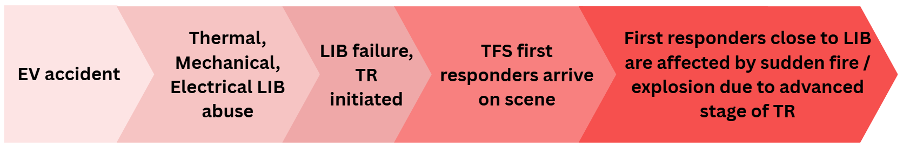
Service environment
We visited a Tesla dealership and interviewed a senior technician there to understand the vehicles, then characterized the conditions the device must survive. Selected ranges:
| Condition | Design range |
|---|---|
| Operating temperature | −30 to 56 °C, including heating from TR |
| Corrosive gases during TR | Hydrofluoric acid 1–200+ ppm; carbon monoxide 50–10,000 ppm; VOCs 100–5,000 ppm |
| Water and snow | 0–4 mm/h, with an IP-67 rating required |
| Shock | Mechanical 0–50 G; electrostatic ±8 kV |
| Electrical environment | 300–800 V battery proximity; 3–10 V/m radiated field during TR |
We also mapped the interest holders, from the Fire Fighters Association of Ontario and the Office of the Fire Marshal, who shape what counts as safe for the field, to towing and battery-recycling companies who handle damaged EVs after the fire crews leave.
Requirements
We defined one primary function, to detect and indicate danger due to LIB thermal runaway in EVs, and four secondary functions that support it.
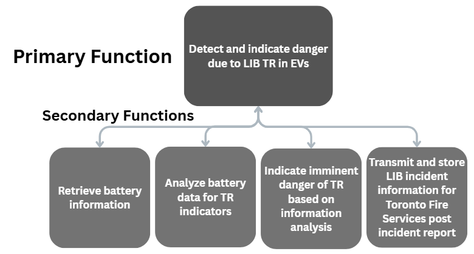
Objectives
Objectives are ranked by a pairwise comparison, with detection speed first and simplicity second.
| Objective | Metric | Goal |
|---|---|---|
| Detect TR onset as quickly as possible | Alert lead time before the TR spike | ≥ 11.6 s |
| Be simple to operate | First-time deployment success rate | ≥ 90% |
| Be light-weight | Weight | ≤ 1.36 kg |
| Transmit data a long distance | Distance from EV to user | ≥ 20 m |
| Have a long uptime | Hours on one charge | ≥ 24 h |
The 11.6 s target comes from physics rather than preference. The recommended safety distance from the battery is 20 m, and a firefighter carrying equipment at a fast walk covers it at about 1.72 m/s. Since there are at least 15 s between the first prominent sign of TR and the spike, the detection and alert chain has a fixed time budget:
Constraints
| Constraint | Limit |
|---|---|
| Detect and alert on TR | T ≥ 150 °C, dT/dt ≥ 1 °C/s, or V = 0 V |
| Shock resistant | Operates after a drop of ≥ 100 mm (MIL-STD-810H) |
| Temperature resistant | Operates after 72 h at ≥ 49 °C and at ≤ −30 °C |
| Waterproof | IP-67 (IEC 60529) |
| Inert to corrosive gases | 0% weight loss after 48 h of exposure |
From 85 ideas to three concepts
We started with individual brainstorming, then used functional decomposition to reach 51 means of fulfilling the secondary functions. A morphological chart combined them into 47 complete solutions. Crazy 8s, blue-sky thinking and reverse thinking added 22 more, and SCAMPER brought the total to 85, sorted into eight categories.
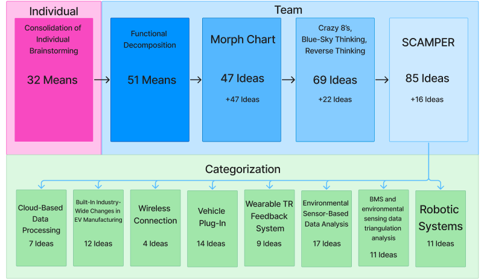
To narrow them down, we removed ideas that were infeasible, broke physics or were redundant, leaving 51. Multivoting cut the list to 10, and a graphical decision chart scored those against the two highest-priority objectives, detection speed and simplicity. The three in the top right became our alternatives.
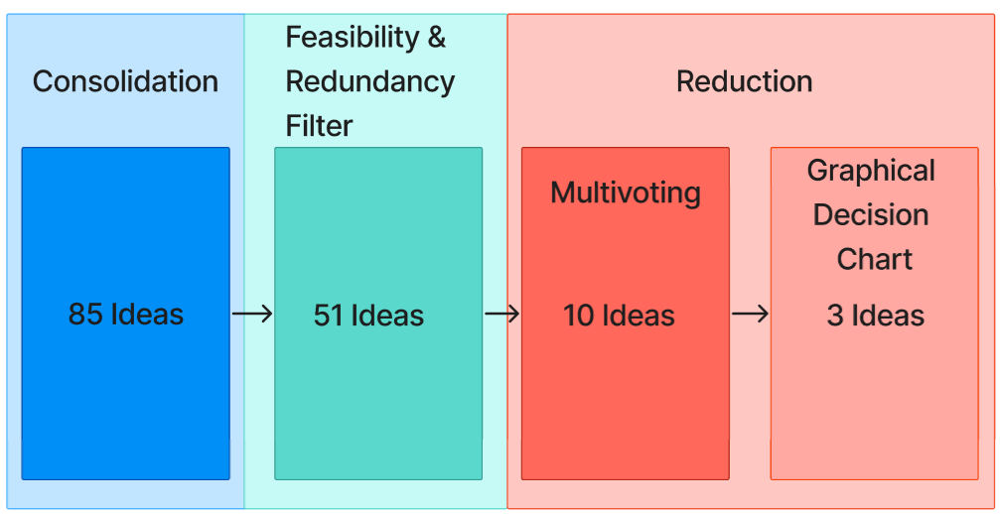
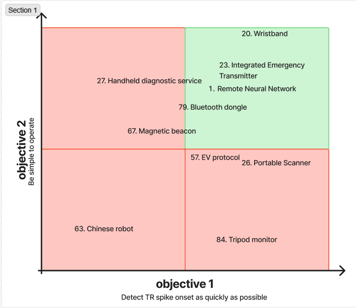
The three concepts
1. Electronic wristband
A butyl rubber wristband worn by firefighters. An OBD-II Bluetooth adapter plugged into the EV’s service port streams BMS data to the band. A nRF52840 microcontroller runs a threshold-based algorithm, and when TR is imminent a haptic motor vibrates and LEDs flash. An LTE Cat-M1 module uploads incident data to the Toronto Fire Services database for post-incident analysis.
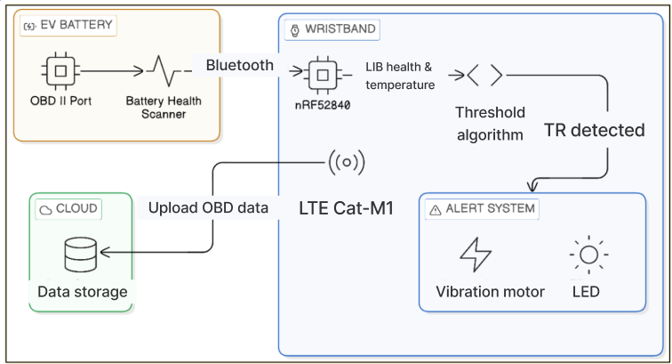
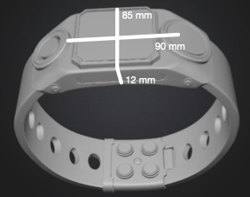
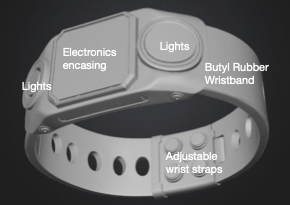
2. Integrated emergency transmitter
A transmitter built into the vehicle reads the BMS over the CAN bus and wakes up when an inertial sensor or the CAN data detects a crash. It broadcasts over vehicle-to-everything (V2X) communication to a handheld receiver, which runs a threshold algorithm and triggers audible and visual alarms, sized to meet ISO 7731 and ISO 11428. Data is stored locally and uploaded when a network is available.
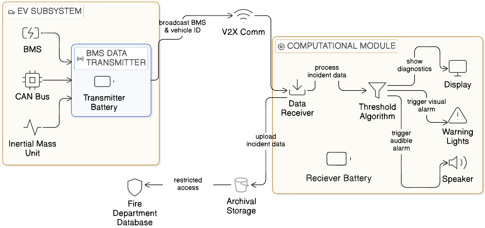
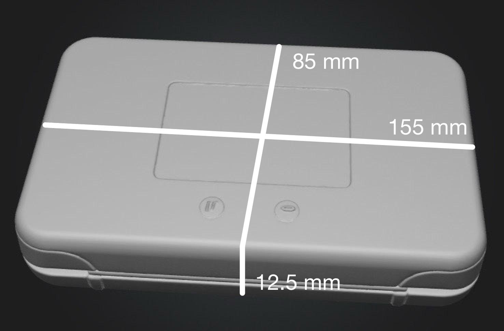
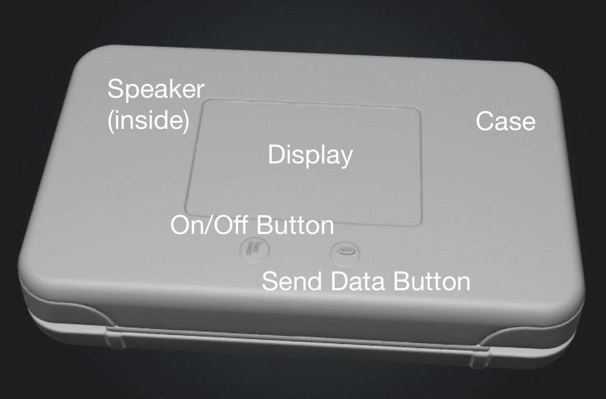
3. Remote neural network
A sealed adapter plugs into the OBD-II port. A CAN transceiver feeds an ESP32-S3, which sends BMS data over Bluetooth Low Energy to a firefighter’s phone or tablet. A cloud model trained on previous EV fire data predicts TR and raises alerts through a website, which also visualizes the live data. The adapter is housed in a PEEK case wrapped in silicone rubber and filled with aerogel to survive the environment.
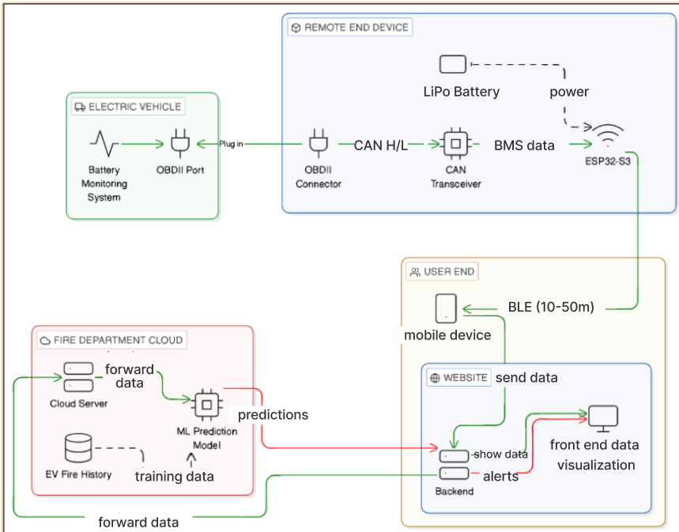
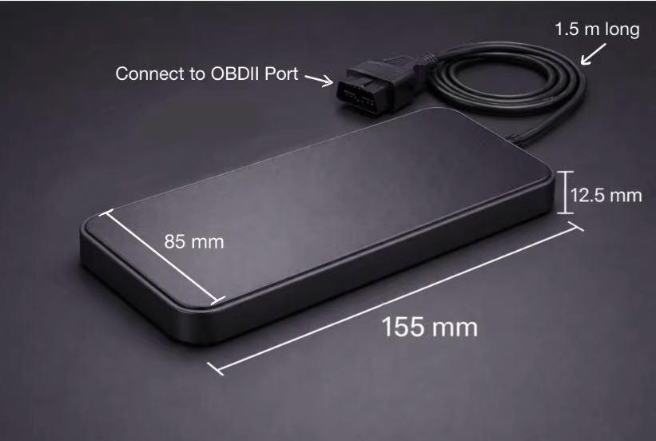
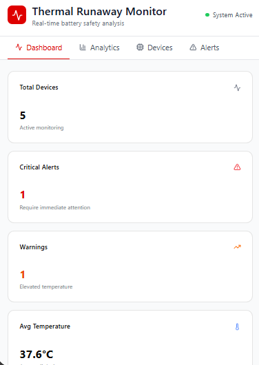
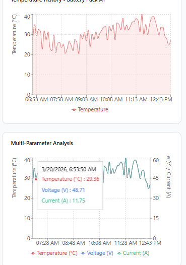
Choosing the wristband
We compared the alternatives with a Pugh chart, using the wristband as the datum and scoring each other design from −1 to +1 against every objective.
| Objective | Wristband | Integrated transmitter | Remote neural network |
|---|---|---|---|
| Detect TR quickly | 0 | 0 | +1 |
| Simple to operate | 0 | −1 | −1 |
| Light-weight | 0 | −1 | 0 |
| Long transmission distance | 0 | 0 | 0 |
| Long uptime | 0 | 0 | −1 |
| Total | 0 | −2 | −1 |
The wristband won on simplicity, which matters most in a high-stress scene. There’s nothing to configure, and firefighters in gloves don’t need fingertip access to a screen. Vibration is also one of the most reliable ways to get a firefighter’s attention.
The trade-off. A fixed-threshold algorithm is less accurate and less predictive than the neural network, and a wireless link can be unreliable near interference. We accepted this for operational simplicity, and the validation test is designed to check whether the speed holds up.
The proposed design
The wristband houses an nRF52840 microcontroller, an LTE Cat-M1 module, a vibration motor, LEDs and a 1000 mAh lithium-polymer battery in a butyl rubber shell. We chose butyl rubber because it is shock absorbing, heat resistant, waterproof and inert to the corrosive gases released during TR. The band is about 85 × 90 × 12 mm.
Checking the design against the objectives, using component data sheets and published figures:
| Objective | Goal | Estimate |
|---|---|---|
| Detection time | ≤ 3.4 s | ~0.1 s reported for the chosen algorithm |
| Weight | ≤ 1.36 kg | ~112 g (0.25 lb) |
| Transmission distance | ≥ 20 m | Up to 100 m (Class 1 Bluetooth) |
| Uptime | ≥ 24 h | ~27.5 h |
Uptime comes from the battery capacity divided by the combined current draw of the microcontroller (6.3 mA) and the cellular module (30 mA):
The vibration motor is specified at 5 m/s², the maximum an arm can handle according to Canadian occupational health and safety guidance.
Validation plan
The success criterion is an alert lead time of at least 11.6 s. To measure it, we use hardware-in-the-loop testing, a method common in EV battery development. An ESP32 microcontroller runs the threshold algorithm and drives two LEDs and a vibration motor. A laptop replays a published dataset of mechanically induced thermal runaway across several cell chemistries, sending voltage, temperature and timestamps to the ESP32 over Bluetooth.
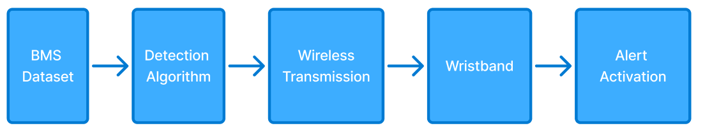
- The laptop connects to the ESP32 over Bluetooth using the PyBluez library.
- The dataset is transmitted according to its timestamps, while the microcontroller tracks time independently.
- The algorithm analyzes the incoming data on the microcontroller.
- When thresholds are reached, the microcontroller activates the LEDs and vibration motor and records the time of activation.
- The experiment is repeated for 10 datasets, each from 15 m away, and the times to alert are averaged.
Limitations and next steps
The test setup replaces the OBD-II Bluetooth adapter with a laptop and doesn’t reproduce the temperatures, gases or interference of a real incident. Ten datasets also cover only a small part of the range of battery behaviour. The next steps are to integrate the real OBD-II adapter and run controlled tests on real battery systems.